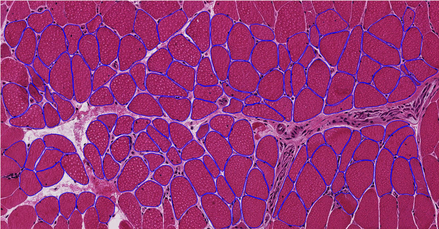

|
Detail: Based on medical image data provided by BICI2 lab, implemented fully connected network, holistically-nested edge detection methods and got a better detection and segmentation effect compared with random forest method. Now working on residual neural network to achieve better result and keep digging on deep learning. |
|  |
Developed a cpp software implementation of an image segmentation algorithm based on Random Forest Machine Learning algorithm, for Muscle Cell Image gathered from University of Florida Shands Hospital. Combined with Histogram Segmentation algorithm for feature extraction, Watershed and self-defined Hierarchical segmentation framework for segmentation, this cpp dll-call software works quite well for our muscle cell data. Video demo can be seen soon online. |
|
Built a Local Binary Patterns based software for face recogition, together with Deformable Part Model for object tracking. Implementation these two effective algorithms for contruction site videos with the aim to prevent from stranger invading and fire-fighting equipments stealing. Now we are heading towards implementing MOT on large-scale construction site video to monitor multiple objects. Video demo can be seen soon online. |